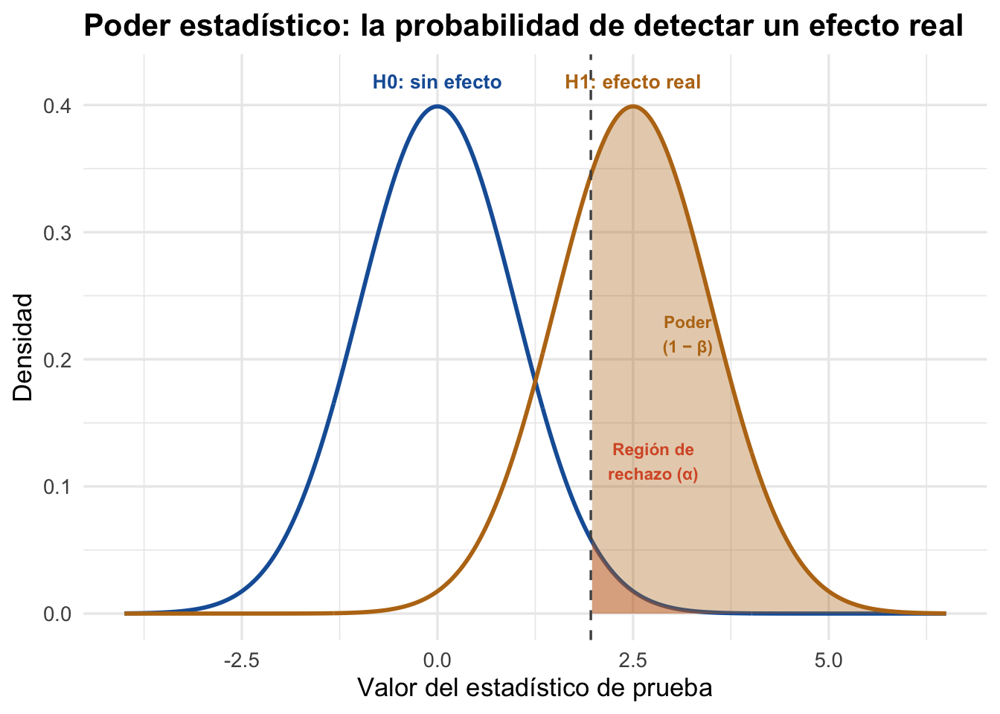
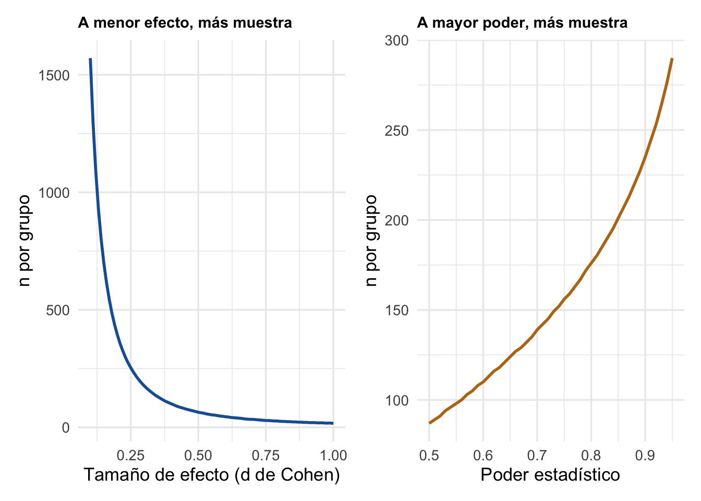
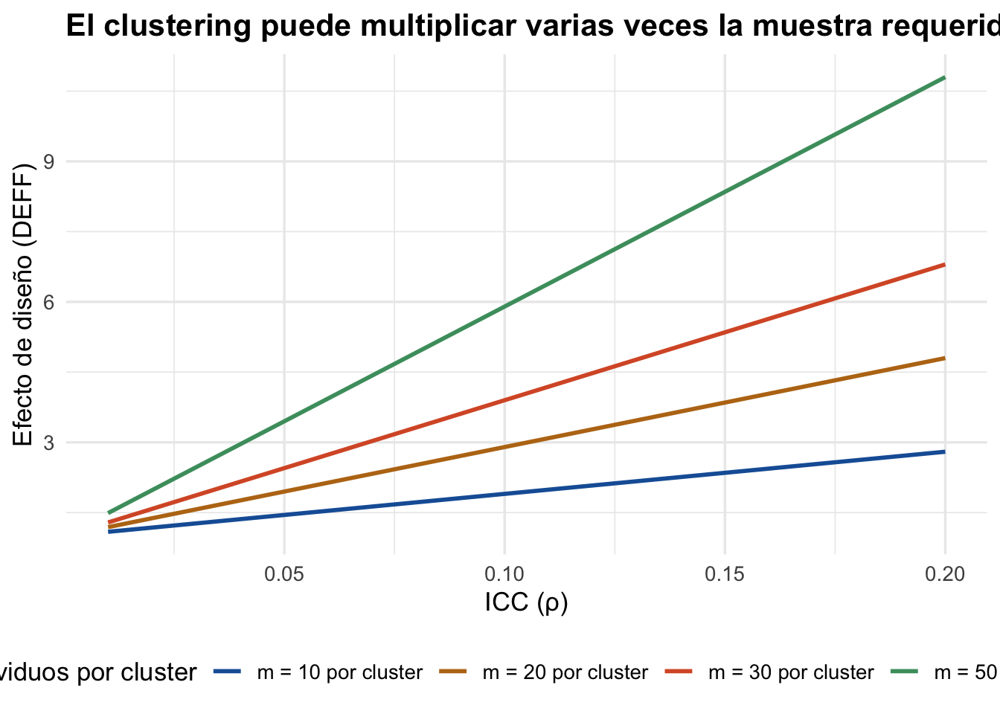

15 Poder estadístico y tamaño de muestra
15.1 ¿Qué es el poder estadístico?
Antes de implementar cualquier evaluación de impacto, usted necesita responder una pregunta fundamental: ¿tengo suficientes datos para detectar el efecto de mi programa, si este realmente funciona?
El poder estadístico es la probabilidad de detectar un efecto real cuando este existe. En términos técnicos, es la probabilidad de rechazar correctamente la hipótesis nula (\(H_0\): “el programa no tiene efecto”) cuando la alternativa (\(H_1\): “el programa sí tiene efecto”) es verdadera. @gertler2016impact [Cap. 11] lo definen como la probabilidad de detectar una diferencia entre los grupos de tratamiento y comparación cuando esta realmente existe, y advierten que realizar una evaluación con poder insuficiente es muy costoso: puede llevar a concluir erróneamente que un programa beneficioso no funciona y recomendar su cierre, con pérdidas sociales significativas.
TipAnalogía: el detector de metales
Piense en el poder estadístico como un detector de metales. Su capacidad para encontrar algo depende de qué tan grande es el objeto enterrado (tamaño del efecto), qué tan profundo está (variabilidad) y qué tan sensible es el detector (tamaño de muestra).
El poder depende de cuatro parámetros interconectados:
| Parámetro | Símbolo | Descripción | Valor típico |
|---|---|---|---|
| Nivel de significancia | \(\alpha\) | Probabilidad de falso positivo | 0.05 |
| Poder estadístico | \(1 - \beta\) | Probabilidad de detectar un efecto real | 0.80 |
| Tamaño del efecto | \(\delta\) | Magnitud del impacto del programa | Depende del contexto |
| Tamaño de muestra | \(n\) | Observaciones por grupo | Lo que calculamos |
15.1.1 Errores tipo I y tipo II
| \(H_1\) verdadera (sí funciona) | \(H_0\) verdadera (no funciona) | |
|---|---|---|
| Rechazamos \(H_0\) | Decisión correcta (Poder = \(1 - \beta\)) | Error tipo I (\(\alpha\)) |
| No rechazamos \(H_0\) | Error tipo II (\(\beta\)) | Decisión correcta |
15.2 ¿Por qué importa calcular el tamaño de muestra?
- Muestra demasiado pequeña: no detectará el efecto aunque el programa funcione. Habrá gastado recursos en una evaluación que no puede concluir nada.
- Muestra demasiado grande: gastará recursos innecesarios en recolectar datos que no aportan precisión adicional.
@gertler2016impact ilustran este dilema con un ejemplo extremo: un programa de nutrición evaluado con 50.000 niños detectará incluso efectos minúsculos, mientras que una evaluación con solo 2 niños no podrá distinguir el efecto del programa del ruido estadístico. El tamaño de muestra adecuado se encuentra entre ambos extremos, y depende de las características del programa y del contexto.
15.2.1 Preguntas para guiar el cálculo de poder
@gertler2016impact [Cap. 11] proponen seis preguntas clave antes de realizar un cálculo de poder:
- ¿La evaluación estima efectos promedio o también efectos para subgrupos específicos?
- ¿Cuál es la unidad de asignación (individuo, hogar, escuela, comunidad)?
- ¿Cuál es el efecto mínimo que justificaría la existencia del programa desde un punto de vista de política?
- ¿Cuál es la media y la varianza del resultado de interés en la línea base?
- ¿Qué nivel de poder se considera aceptable (típicamente 0.80 o 0.90)?
- Si el programa se asigna por conglomerados, ¿cuál es la correlación intra-cluster esperada?
AdvertenciaEl error más común
“Evaluamos a quienes tenemos disponibles” sin verificar si ese número es suficiente. Saberlo de antemano le permite ajustar expectativas o buscar más datos.
15.2.2 Efecto mínimo detectable (MDE)
El MDE es el efecto más pequeño que su diseño puede identificar con el poder y significancia establecidos:
\[ MDE = (z_{\alpha/2} + z_{\beta}) \cdot \sqrt{\frac{2\sigma^2}{n}} \]
Si el MDE es mayor que el efecto que usted espera del programa, su evaluación está condenada al fracaso antes de empezar. @gertler2016impact recomiendan ser conservadores al fijar el MDE: es preferible diseñar la evaluación con un efecto esperado menor al que sugiere la literatura, pues si el efecto real resulta ser mayor, la evaluación tendrá poder suficiente de todas formas. Cuando hay múltiples resultados de interés, el tamaño de muestra debe calcularse para el resultado con mayor varianza o menor efecto esperado, pues ese será el caso más exigente [@bernal2011].
15.3 Cálculo básico de poder
Para una comparación de dos grupos, el tamaño de muestra por grupo es:
\[ n = \frac{(z_{\alpha/2} + z_{\beta})^2 \cdot 2\sigma^2}{\delta^2} \tag{15.1}\]
Donde \(z_{\alpha/2} = 1.96\) para \(\alpha = 0.05\), \(z_{\beta} = 0.84\) para poder = 0.80, \(\sigma^2\) es la varianza del resultado y \(\delta\) es el efecto esperado.

Nota¿Qué es la d de Cohen?
La d de Cohen estandariza el tamaño del efecto: \(d = \delta / \sigma\). Convenciones: 0.2 = pequeño, 0.5 = mediano, 0.8 = grande. En evaluación de impacto, efectos de 0.1–0.3 DE son frecuentes.
15.4 Consideraciones especiales por método
| Método | Particularidades del cálculo de poder |
|---|---|
| RCT | Cálculo estándar. Si la asignación es por conglomerados, ajuste por clustering. |
| DiD | Considere correlación serial y correlación pre-post. Más periodos pre aportan precisión. |
| Matching | El tamaño de muestra efectivo después del emparejamiento es menor. |
| Variables instrumentales | Instrumentos débiles reducen el poder. Regla práctica: F > 10 en primera etapa. |
| RDD | Solo observaciones cercanas al corte contribuyen. Se necesita muestra mucho mayor. |
@gertler2016impact advierten que los métodos cuasi-experimentales (DiD, Matching, IV, RDD) típicamente requieren muestras mayores que un RCT para alcanzar el mismo poder estadístico, porque parte de la varianza se consume en los ajustes necesarios para aproximar el contrafactual. Al planear una evaluación cuasi-experimental, use el cálculo para RCT como punto de partida y aumente la muestra proporcionalmente según el método [@khandker2009].
15.5 Clustering
Cuando el programa se asigna a nivel de conglomerados (escuelas, comunidades, clínicas), las personas dentro de un mismo cluster tienden a parecerse entre sí. Esto reduce la información independiente que cada observación aporta.
15.5.1 ICC y efecto de diseño
El ICC (\(\rho\)) mide qué proporción de la varianza se explica por diferencias entre conglomerados. El efecto de diseño (DEFF) indica cuántas veces más grande debe ser la muestra:
\[ DEFF = 1 + (m - 1) \cdot \rho \tag{15.2}\]
donde \(m\) es el número de individuos por conglomerado. Valores típicos del ICC en ciencias sociales: 0.01 a 0.20.

AdvertenciaEjemplo concreto
Sin clustering necesita 200 personas por grupo. Con 20 escuelas de 20 estudiantes e ICC = 0.10, el DEFF = 1 + 19 × 0.10 = 2.9. Necesitaría 580 por grupo. Ignorar el clustering le haría creer que tiene 3 veces más poder del real.
ImportanteEl número de clusters importa más que el tamaño de cada cluster
@gertler2016impact [Cap. 11] enfatizan un resultado contraintuitivo: en evaluaciones con asignación por conglomerados, el número de clusters importa mucho más que el número de individuos dentro de cada cluster. En el ejemplo HISP+ del libro, una evaluación con 100 clusters de 9 unidades cada uno (900 unidades totales) tiene más poder que una con 10 clusters de 67 unidades (670 unidades), aunque la segunda tenga casi el mismo tamaño total.
La recomendación práctica es tener al menos 30 a 50 clusters por grupo (tratamiento y comparación). Por debajo de ese umbral, los errores estándar se vuelven poco confiables incluso con muchos individuos por cluster.
15.6 Errores comunes
AdvertenciaEl poder post-hoc no es informativo
Si ya obtuvo resultados sin significancia, no calcule el poder con su efecto estimado. Esto es circular: un resultado no significativo siempre produce poder bajo. Reporte el MDE en su lugar.
Advertencia“No encontramos efecto” ≠ “no hay efecto”
Un resultado no significativo con poco poder no demuestra que el programa no funciona. Solo demuestra que no pudo detectar un efecto con esos datos. Distinga entre “evidencia de ausencia” y “ausencia de evidencia”.
AdvertenciaIgnorar el clustering infla su poder
Si el programa se asigna por conglomerados y calcula poder como si cada individuo fuera independiente, puede creer que tiene 2 a 5 veces más poder del real. Siempre ajuste por ICC.
AdvertenciaNo considerar la deserción
Si espera 20% de deserción, reclute al menos 25% más: \(n_{reclutamiento} = n_{requerido} / (1 - tasa\_desercion)\).
TipCódigo y práctica
Para el taller práctico con código R de este método, consulte el Anexo de código: Poder estadístico. Para una guía paso a paso de cómo usar IA para ejecutar este análisis, consulte la Parte 6: Cómo hablar con la IA.
15.7 Para profundizar
TipRecursos recomendados
- @gertler2016impact, Capítulo 11 (“Choosing the Sample”): guía práctica completa sobre cálculo de poder en evaluación de impacto, con el ejemplo HISP+ como hilo conductor y discusión detallada del papel de los conglomerados.
- @bernal2011, Capítulo 8: tratamiento formal del cálculo de poder, efecto mínimo detectable y consideraciones de diseño muestral con ejemplos colombianos.
- @khandker2009: manual del Banco Mundial con énfasis en implementación práctica de cálculos de muestra para evaluaciones en países en desarrollo.
- Huntington-Klein, N. (2021). The Effect: An Introduction to Research Design and Causality. Capítulo sobre poder estadístico, disponible en theeffectbook.net.
- Cohen, J. (1988). Statistical Power Analysis for the Behavioral Sciences (2da ed.): referencia clásica sobre tamaños de efecto estandarizados.
- Documentación del paquete
pwren R:?pwr.t.test.